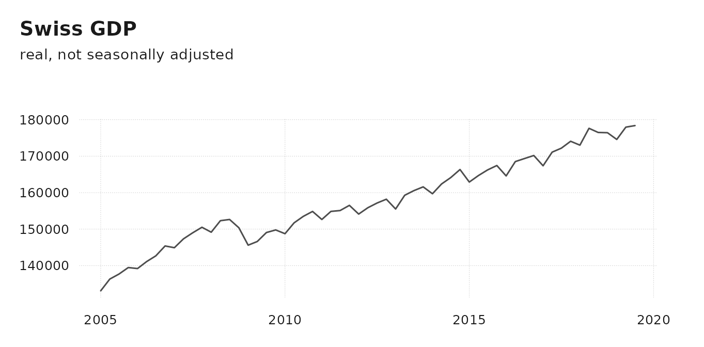
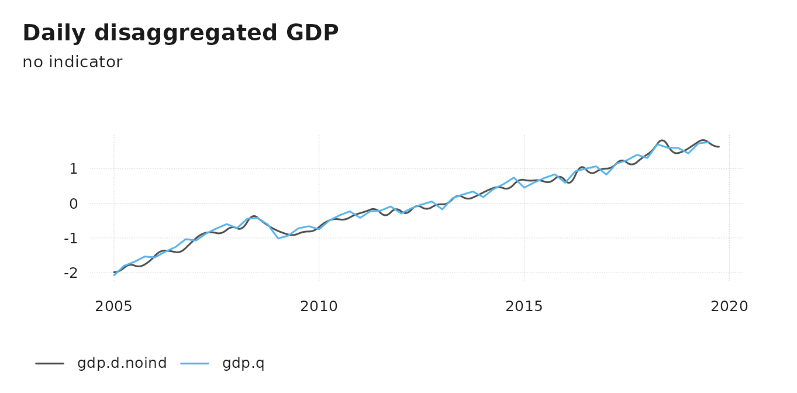
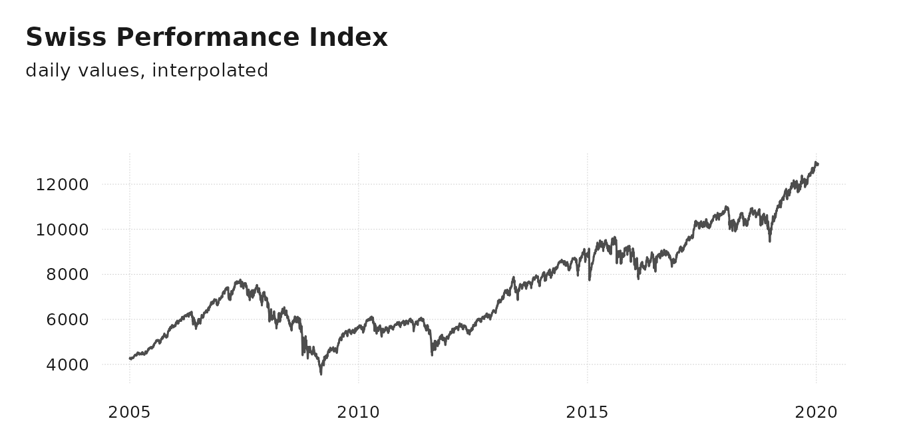
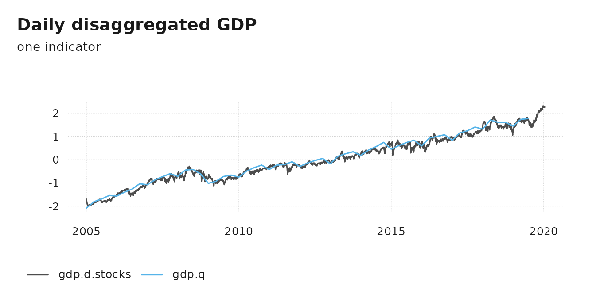

Convert between any frequency
Since version 1.0, tempdisagg can convert between most frequencies, e.g., it can disaggregate a monthly series to daily. It is no longer restricted to regular conversions, where each low frequency period had the same number of high frequency periods. Instead, a low frequency period (e.g. month) can contain any number of high-frequency periods (e.g. 31, 28 or 29 days). Thanks to Roger Kissling and Stella Sim who have suggested this idea.
We can not only convert months to days, but also years to days, weeks to seconds, or academic years to seconds, or lunar years to hours, … The downside is that the computation time depends on the number of observations. Thus, for longer high-frequency series, the computation may take a while.
Quarterly to daily disaggregation
In the following, we try to disaggregate quarterly GDP of Switzerland to a hypothetical daily GDP series. The example series are shipped with the package.
library(tempdisagg)
data(tempdisagg)
head(gdp.q)
#> time value
#> 1 2005-01-01 133101.3
#> 2 2005-04-01 136320.4
#> 3 2005-07-01 137693.7
#> 4 2005-10-01 139475.9
#> 5 2006-01-01 139204.7
#> 6 2006-04-01 141112.5Because we are dealing with daily data, we keep the data in a
data.frame, rather than in a ts object. Other
time series objects, such as xts and tsibble,
are possible as well. For conversion and visualization, we use the tsbox package.

No indicator
For models without an indicator series, method = "fast"
uses the Chow-Lin method with a rho parameter value very close
to 1. This is numerically close to the theoretically preferable
Denton-Cholette method but much faster. Faster, as stated above, has a
relative meaning; the following calculation still takes a few
seconds:
m.d.noind <- td(gdp.q ~ 1, to = "daily", method = "fast")
summary(m.d.noind)
#>
#> Call:
#> td(formula = gdp.q ~ 1, to = "daily", method = "fast")
#>
#> Residuals:
#> Min 1Q Median 3Q Max
#> -20275.5 -6704.0 371.7 10125.2 22872.8
#>
#> Coefficients:
#> Estimate Std. Error t value Pr(>|t|)
#> (Intercept) 1704.2 517.6 3.292 0.0017 **
#> ---
#> Signif. codes: 0 '***' 0.001 '**' 0.01 '*' 0.05 '.' 0.1 ' ' 1
#>
#> 'chow-lin-fixed' disaggregation with 'sum' conversion
#> 59 low-freq. obs. converted to 5386 high-freq. obs.
#> Adjusted R-squared: 0.09057 AR1-Parameter: 1Because daily GDP is much lower than monthly GDP, we scale both series to the same mean and standard deviation:
gdp.d.noind <- predict(m.d.noind)
ts_plot(
ts_scale(
ts_c(gdp.d.noind, gdp.q)
),
title = "Daily disaggregated GDP",
subtitle = "no indicator"
)
Like with all disaggregation methods in tempdisagg, the resulting series fulfills the aggregation constraint:
all.equal(ts_frequency(gdp.d.noind, "quarter", aggregate = "sum"), gdp.q)
#> [1] TRUEStock market data as an indicator
For a more refined disaggregation, one or several indicator series may be used. In the following, we use Swiss stock market data to disaggregate GDP. Data of the stock market index, the SMI, is also included in tempdisagg:
ts_plot(spi.d, title = "Swiss Performance Index", subtitle = "daily values, interpolated")
Weekend and holiday values have been interpolated, because
td does not allow the presence of missing values. For how
to interpolate the raw data, see ?spi.d.
The following uses the Chow-Lin method to disaggregate the series. A high rho parameter takes into account that the two series are unlikely to be co-integrated.
m.d.stocks <- td(gdp.q ~ spi.d, method = "chow-lin-fixed", fixed.rho = 0.9)
summary(m.d.stocks)
#>
#> Call:
#> td(formula = gdp.q ~ spi.d, method = "chow-lin-fixed", fixed.rho = 0.9)
#>
#> Residuals:
#> Min 1Q Median 3Q Max
#> -10656 -1760 1076 3796 8891
#>
#> Coefficients:
#> Estimate Std. Error t value Pr(>|t|)
#> (Intercept) 1.320e+03 2.856e+01 46.22 <2e-16 ***
#> spi.d 5.512e-02 3.735e-03 14.76 <2e-16 ***
#> ---
#> Signif. codes: 0 '***' 0.001 '**' 0.01 '*' 0.05 '.' 0.1 ' ' 1
#>
#> 'chow-lin-fixed' disaggregation with 'sum' conversion
#> 59 low-freq. obs. converted to 5493 high-freq. obs.
#> Adjusted R-squared: 0.7928 AR1-Parameter: 0.9This results in a much more volatile estimation of daily GDP:
gdp.d.stocks <- predict(m.d.stocks)
ts_plot(
ts_scale(
ts_c(gdp.d.stocks, gdp.q)
),
title = "Daily disaggregated GDP",
subtitle = "one indicator"
)